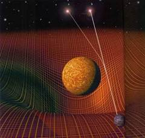

Đầu năm 1916, Einstein phát triển thêm “thuyết tương đối hẹp” thành “thuyết tương đối tổng quát” (relativité généralisée)[14]. Lúc đó mọi người mải theo dõi tin tức trên mặt trận Pháp, nên chỉ có vài tờ báo đăng tin phát minh mới đó của ông, vả lại thuyết đó cao quá, tương truyền trên khắp thế giới chỉ có mười hai nhà bác học hiểu nổi. Nhưng ai ai cũng nhận rằng nó là một cuộc cách mạng vĩ đại vào bậc nhất trong khoa học từ thời Newton đến nay.
Suốt hai thế kỉ, người ta đều nhận thuyết vạn vật hỗ tương hấp dẫn của Newton là đích xác rồi, giải được những vấn đề căn bản của khoa học tới nỗi một thi sĩ Anh Alexander Pope (1688-1744) đã ca tụng Newton như sau:
Nature and Nature’s law lay hid in night;
God said: “Let Newton be!” and all was light.
(Thiên nhiên và luật thiên nhiên còn chìm trong bóng tối;
Thượng Đế truyền: “Newton hạ giới!” thế là vũ trụ bừng sáng)
Nhưng khi thuyết tương đối tổng quát của Einstein xuất hiện, có người đã đề nghị thêm hai câu dưới đây nữa:
Nhưng chẳng được bao lâu, rồi Quỉ Satan bảo:
“Einstein hạ giới!” và vũ trụ lại tối tăm lại.
Hai câu đó diễn được ý kiến rất phổ biến này: học thuyết của Newton đã sụp đổ, khoa vật lí trước thế kỉ XX cũng sụp đổ, người ta không thể giảng vũ trụ bằng cơ học (mécanique) được nữa. Nhưng bảo rằng vũ trụ tối tăm lại thì sai; vì thuyết của Einstein giảng được vũ trụ một cách đúng hơn trước, làm cho vũ trụ sáng hơn trước nữa.
Newton chỉ coi sự hấp dẫn (gravitation) là một sức mạnh. Einstein dùng môn toán để chứng minh rằng khoảng chung quanh của bất kì một thiên cầu nào (mặt trời, mặt trăng, trái đất, các ngôi sao…) đều là một trường hấp dẫn (champ gravitationnel) cũng như trường từ tính (champ magnétique) ở chung quanh một phiến nam châm.
Mấy thế kỉ nay thuyết Newton không giảng được những chuyển động khác thường của hành tinh Mercure[15], nay theo thuyết của Einstein thì những chuyển động đó hiểu được. Sức hấp dẫn của champ gravitationnel đó lớn tới nỗi tia sáng gặp nó phải quẹo đường đi.
Cũng theo thuyết của Einstein, vũ trụ là một khoảng cong và như vậy vũ trụ không phải là vô biên.
Điều đó, tất cả các nhà thiên văn cho là vô lí. Các nhà hình học cũng hoang mang: phải bỏ môn hình học ba chiều (trois dimensions) của Euclide, mà thay vào môn hình học bốn chiều.
Không do nhận xét thiên nhiên, không nhờ thí nghiệm, chỉ suy nghĩ rồi làm toán (Einstein có lần nói rằng phòng thí nghiệm của ông là cây viết máy), Einstein chứng minh được thuyết của mình. Ông bảo rằng tia sáng một ngôi sao khi tới gần mặt trời, uốn cong về phía trong (nghĩa là về phía mặt trời) thành thử ở trái đất nhìn lên, ta thấy vị trí của ngôi sao sai đi một chút cũng như khi thọc một đầu gậy xuống nước, ta thấy đầu gậy không ở đúng vị trí thực của nó.

Ánh sáng của một ngôi sao nằm khuất sau mặt trời
bị hấp lực của mặt trời uốn cong nên người quan sát ở mặt đất
có ảo tưởng rằng ngôi sao đó nằm trên đường thẳng quan sát của mắt.
Và vì vũ trụ là một khoảng cong, một tia sáng của một ngôi sao nào đó có thể sau hằng tỉ năm, đi vòng quanh vũ trụ rồi trở về chỗ nó xuất phát, cũng như chúng ta đi vòng quanh trái đất rồi trở về Sài Gòn vậy.
Các nhà bác học không bác được lối tính của Einstein, nhưng cũng chưa tin hẳn, mãi tới bốn năm sau, ngày 29 tháng 5 năm 1919, nhân một lần nhật thực, dùng máy ảnh để chụp hình ở Sobral (Brésil) mới thấy rằng quả nhiên tia sáng một ngôi sao đã uốn cong đi khi lại gần mặt trời, mà vị trí trí của ngôi sao đó xê dịch khoảng 1,45 giây cung (seçonde d’are) đúng như Einstein đã tính trước[16].
Lúc đó người ta mới phục bộ óc vĩ đại của ông và hai năm sau, năm 1921, ông được giải thưởng Nobel về vật lí, nhưng không phải vì thuyết tương đối, mà vì một công trình nghiên cứu về photon, một công trình mà tầm quan trọng kém hơn nhiều. Số tiền năm ngàn Mĩ kim nhận được, ông tặng một nửa cho một cơ quan từ thiện, còn một nửa giao cho bà vợ trước để nuôi hai cậu con trai. Ông không có thêm người con nào nữa với bà vợ sau. Hai người con trai của ông sau này đều nên người và đều quí mến cha.
[14] Ông Hoàng Xuân Hãn dịch là “thuyết tương đối suy rộng” rộng đối với hẹp (relativité restreinte). Nhưng nhiều người theo tiếng Anh dịch là “tương đối tổng quát” (general theory).
Thuyết đó rất khó, tôi không đủ tư cách để phổ biến nó với độc giả, cho nên trong cuốn này chỉ giới thiệu ít hàng thôi; độc giả có thể đọc cuốn: l’Introduction à l’étude de la relativité của Bertrand Russell.
Về tiếng Việt, tôi xin giới thiệu bài Quan niệm không gian thời gian trong thuyết tương đối Einstein của Giáo sư Phạm Mậu Quân đăng trên Gió Việt số 18 tháng 4 năm 1969.
[15] Theo Nguyện Xuân Sanh thì Einstein “hoàn toàn tin vào lý thuyết tương đối rộng của mình và những hệ luận của nó khi ông kiểm tra thấy hấp lực Newton chỉ là một xấp xỉ của thuyết tương đối rộng và kết quả tính toán độ lệch của điểm cận nhật (điểm gần mặt trời nhất của quỹ đạo) của sao Mercury theo thuyết tương đối rộng (43 giây) hoàn toàn trùng hợp với kết quả quan sát của nhà thiên văn học Pháp LeVerrier 1859, điều mà cơ học thiên thể của Newton đã không giải thích được; đó là độ lệch trong cả khoảng thời gian 100 năm, rất nhỏ nhưng cũng đủ gây quan ngại trong giới vật lý và thiên văn!”. (Sđd, trang 101). (Goldfish).
[16] Theo Nguyễn Xuân Sanh thì ngoài đoàn quan sát tại Sobral ở Brazil (tức Brésil) còn có đoàn quan soát ở “đảo Principe ngoài khơi bờ biển của Guinea”. Ông cho biết thêm: “Ngày 6..11.1918: Trong một cuộc hợp chung trọng thể của Royal Society và Royal Astronomical Society ở Luân Đôn về kết quả của hai đàn thám hiểm, Sir Frank Watson Dyson long trọng tuyên bố kết luận: “Sau cuộc kiểm tra kỹ lưỡng các bản anh, tôi sẵn sàng có thể nói rằng chúng chứng minh tiên đoán của Einstein là đúng. Chúng tôi được một kết quả rất dứt khoát rằng ánh sáng bị lệch theo định luật hấp lực của Einstein”. Độ lệch do đo đạt được là 1,64” (giây) trong khi tiên đoán của Einstein là 1,7”. Độ sai biệt không đáng kể”. (Sđd, trang 97). (Goldfish).